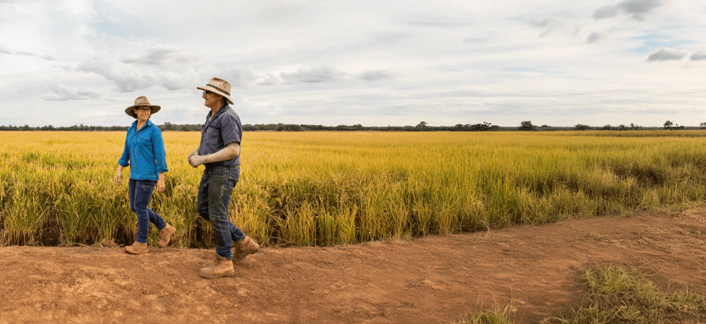

Grower profile
Commitment to innovation in rice farming
Garry and Marg Knagge, Gogeldrie, NSW

Garry and Marg Knagge are the third generation on their family’s farm near Leeton. They’ve made part of it a testing ground for new rice varieties.
Returning to the family farm
The farm dates back to the original Gogeldrie Station land release. Garry returned to work with his father in 2000, and he and Marg bought the property in 2022. His early involvement in industry committees and the Environmental Champions Program helped him look beyond established methods and see where research could help.
“We go through the key learnings together, and I always walk away with something new to apply.”
Making room for trials
The Knagges plant around 85 hectares of rice in a typical year, depending on water availability. They set aside one hectare for trials at first. That commitment grew to 20 hectares, and their farm is now one of the sites where Rice Breeding Australia tests varieties in the field.
Garry also takes part in local Rice Extension Focus Site meetings. The discussions between growers and agronomists give him ideas he can bring back to his own paddocks.
Building a business with support
GrowRice financing helped the couple build their enterprise during their share farming years and ultimately reunite the family property. Garry credits the SunRice team with practical support during a serious farm accident in 2020. He encourages growers starting out to join local groups, ask questions and use the knowledge available through the industry.